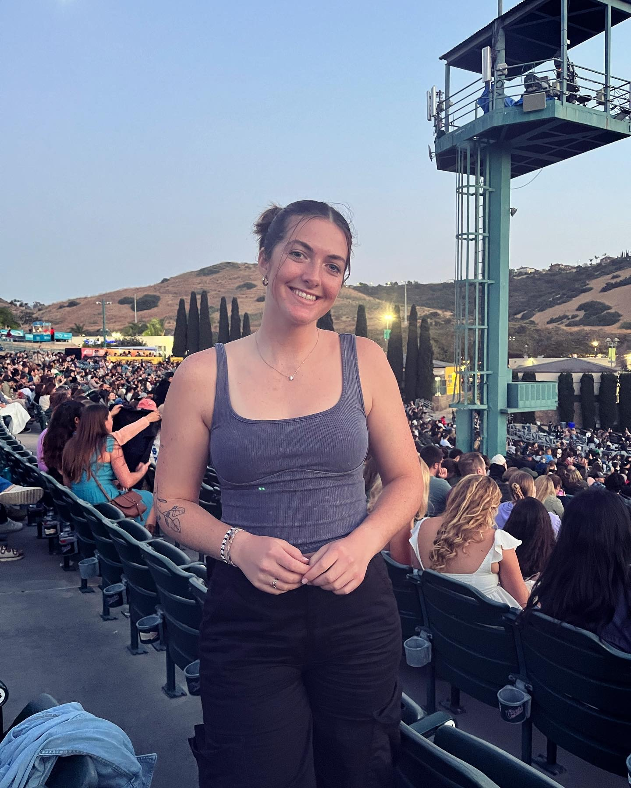

Hello, my name is Madeline Kruse, and I am a Junior at the University of Iowa studying Sustainability Sciences. Acedemically, I am interested in all things Sustainability. I really enjoyed learning about making cities more liveable, and all of the cascading impacts regulations can have on a population of residents. I am hoping to learn more about topics like that, as well urban ecology, circular economies, and integrating the environmental movement with the built society we live in. Professionally, I currently work as a Site Administrative Intern at Engie, which is the company that does utilities for UI. They are a global company that is a leader in the green-energy transition. I have really enjoyed my position and felt like it has been an amazing oppurtunity to develop skills like presenting myself in a coroprate environment professionally, as well as communication, planning, and data input skills. I look foward to continuing my career in the green transition in general. I would also be interested in a variety of other professional pursuits after college, like sustainability coordination, sustainable landscaping, or any career that focuses on helping the general population make sustainable changes in an efficient economically and empathically aware and realistic way. My personal interests include rock climbing, crafting, reading, going out with friends, attending concerts, taking care of my bazilian plants, and whatever exciting oppurtunities come my way within my community.
